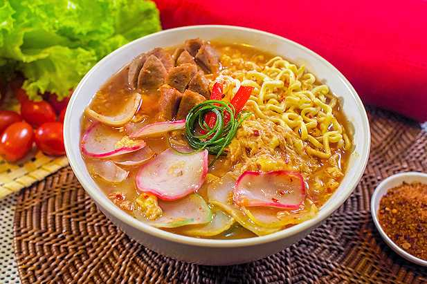
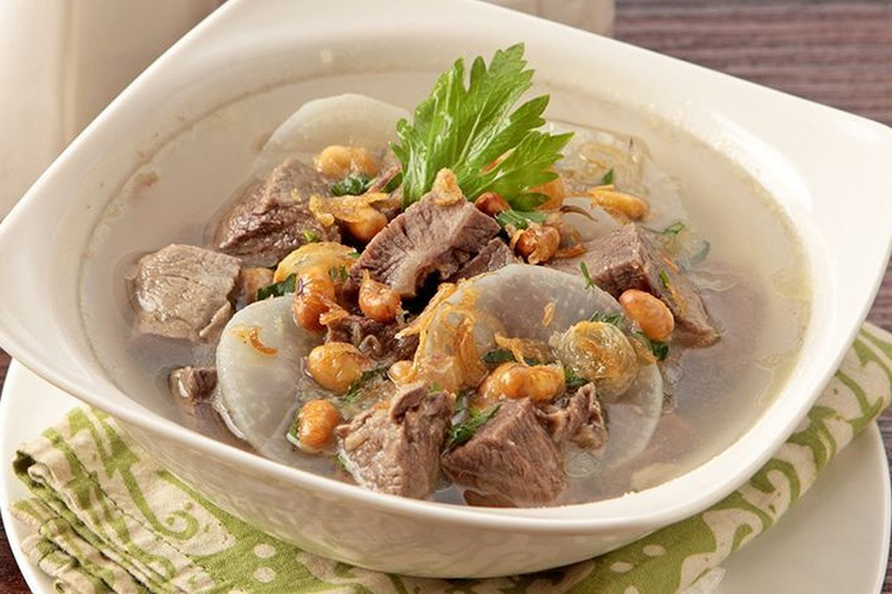

Batagor
Fried snackShort for "baso tahu goreng". Fish dumplings and tofu are deep-fried until crisp, then served with rich peanut sauce, sweet soy sauce, and a squeeze of lime. Crunchy outside, soft inside, savory and slightly sweet.
Short for "baso tahu goreng". Fish dumplings and tofu are deep-fried until crisp, then served with rich peanut sauce, sweet soy sauce, and a squeeze of lime. Crunchy outside, soft inside, savory and slightly sweet.

Softened crackers cooked in a spicy sauce of kencur, garlic, and chili, usually with egg, chicken, sausage, or vegetables. Chewy, hot, and fragrant, and you can choose your own spice level.

A light, clear broth with tender beef, white radish, and soybeans, topped with fried garlic and celery. Fresh and gentle in flavor, and best enjoyed warm on a cool Bandung day.